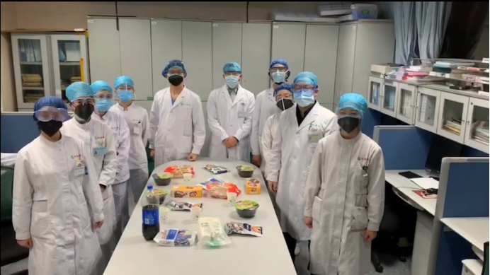
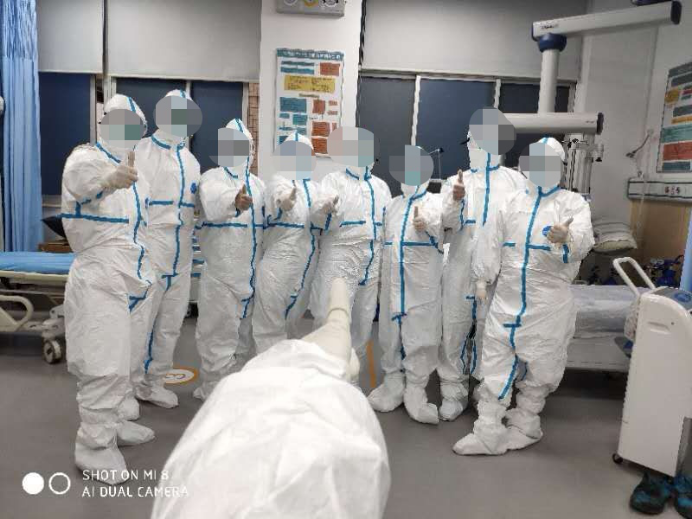

号外｜来自武汉医护人员的家属：我们所看到的一切
原文链接 备份链接 刘洋 大姨：同济医院一线工作者 医生会暴露感染很大一部分原因是， 有大量市民前期隐瞒病史 ———————————————— 我家在X医院附近，大姨是同济医院的医护人员，她对目前一线的情况比较了解。 20号中央了解武 …
武汉“白衣天使”的跨年夜
2020-01-25 08:12 作者：张家振 来源：中国经营网
本报记者 张家振 武汉报道
1月24日，除夕夜。一段华中科技大学同济医学院附属同济医院一线医护人员的“年夜饭”触动了众多人的心。这段视频显示，10名身着标志性白大褂、戴着口罩、护目镜的医护人员齐声喊出“武汉加油”的口号。办公室桌子上只摆放着一些零食和半瓶可乐，这是他们今年的年夜饭。

华中科技大学同济医学院附属同济医院一线医护人员的“年夜饭”
“不当英雄，也不当逃兵。”奋战在武汉市第五医院一线的医护人员王媛写下了这样的感触。
在万家团圆之时，王媛正在值夜班，接诊发热病人。“人比较多。”在和《中国经营报》记者简短交流几句后，王媛又投入到繁忙的工作中。

奋战在防疫一线的王媛
王媛只是除夕夜奋战在防疫一线的万千医护人员中的普通一员。
1月24日夜里11点多，武汉市第五医院的护士刘丽雯接到了单位打来的加班电话，医院在收隔离病人，需要去加班。刘丽雯从武汉市洪山区白沙洲某小区赶往医院，由于打不到车，最终在志愿者援助下赶往医院。
同样奋战在防疫一线的还有武汉市第九医院的谢青。尽管万分忙碌，但物资非常紧缺。“没有护目镜和防护服，甚至没有饭吃，外卖也都停了。”谢青告诉记者，一些非正规渠道过来的社会捐赠物品，比如不是正规企业生产的物资也不敢用，担心有人恶意污染后医生护士会受到污染。

奋战在防疫一线的医护人员团队
一则武汉市第九医院院办的求助信息显示，现在很需要医疗物资，急缺防护服、护目镜和口罩，紧急求助各界人士捐助。对于这则求助信息的真实性，记者拨打求助电话无人接听。一位不愿具名的武汉市第九医院工作人员向本报记者证实，求助电话和求助信息属实，确实存在医疗物资严重短缺情况。
上述武汉市第九医院医护人员还告诉记者，国家拨款目前还没有，病人来看病，这个钱是医院自己垫付的，吃的喝的穿的用的很多物资也没有到位。
今天被临时调往武汉市汉口医院的陈倩，主要负责照顾肺炎重症患者。其同样告诉记者物资缺乏，“口罩、防护服、饭都得不到保障”。
（应受访者要求，文中均系化名。照片由受访医护人员提供。）
（编辑：曹学平 校对：彭玉凤）
* 除《中国经营报》署名文章外，其他文章为作者独立观点，不代表中国经营网立场。
* 未经本网授权，任何单位及个人不得转载、摘编或以其它方式使用上述作品，违者将被追究法律责任。
* 凡本网注明“来源：中国经营网” 或“来源：中国经营报-中国经营网”的所有作品，版权均属于中国经营网（本网另有声明的除外）。
* 如因作品内容、版权和其它问题需要同本网联系的，请在30日内进行。
* 有关作品版权事宜请联系：010-88890046 邮箱：banquan@cbnet.com.cn
原文链接 备份链接 刘洋 大姨：同济医院一线工作者 医生会暴露感染很大一部分原因是， 有大量市民前期隐瞒病史 ———————————————— 我家在X医院附近，大姨是同济医院的医护人员，她对目前一线的情况比较了解。 20号中央了解武 …
原文链接 备份链接 回溯新型冠状病毒在武汉的蔓延过程， “超级传播者”的出现， 几乎是一种必然 1月21日，国家卫健委高级别专家组成员、香港大学微生物学系讲座教授袁国勇提出“超级传播者可能已经出现”，称当时公布的武汉15名被感染医护人员当 …
原文链接 备份链接 武汉各大医院发热门诊的紧张态势已有一周，七家定点医院启动才两天已被压到极限。 武汉不缺顶级医院，不缺顶级专家，不缺顶级医疗能力，缺的是公共卫生防控能力、行政效率和疫情处理流程。 在患者和大医疗机构之间，未见到基层 …
原文链接 备份链接 本文约1471字 预计阅读时间4分钟 中青报·中青网武汉前方报道组 王嘉兴 大年初一，记者来到武汉市第五医院门诊大厅。接近中午12点，大厅里还排着多条长队，有的患者坐在自带的塑料小板凳上排队，所有的人都带着口罩。大厅里 …
原文链接 备份链接 ********** *****黄锡璆表示，现在的技术条件比建设小汤山医院时好多了，他希望火神山医院的建设能够实现更好的使用效果。***** 火神山医院施工现场。受访者供图 文 | 新京报记者 韩沁珂 编辑｜王婧祎 校 …